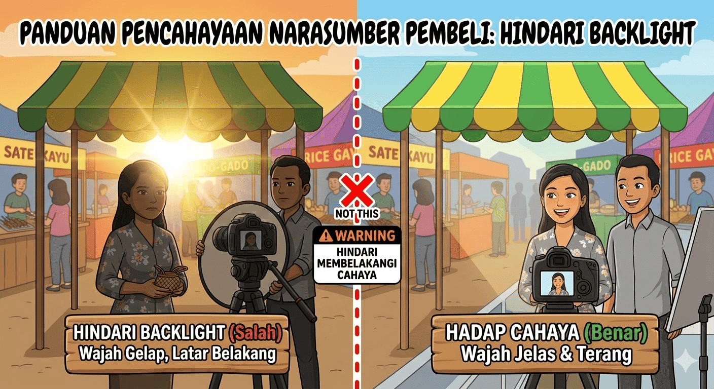
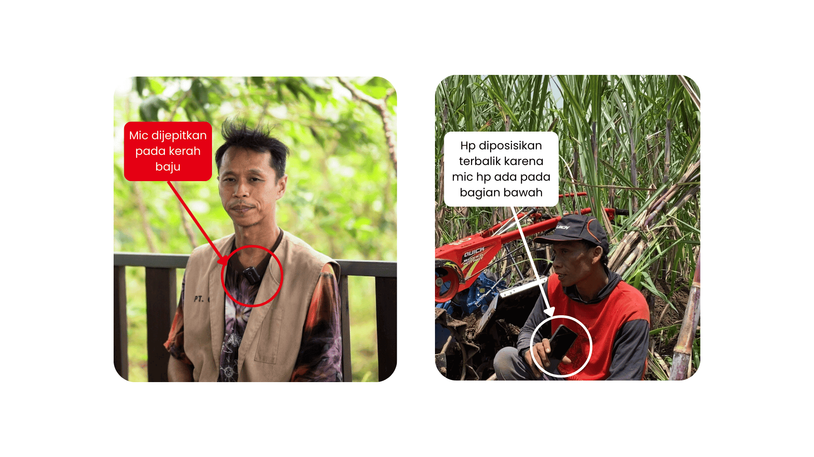
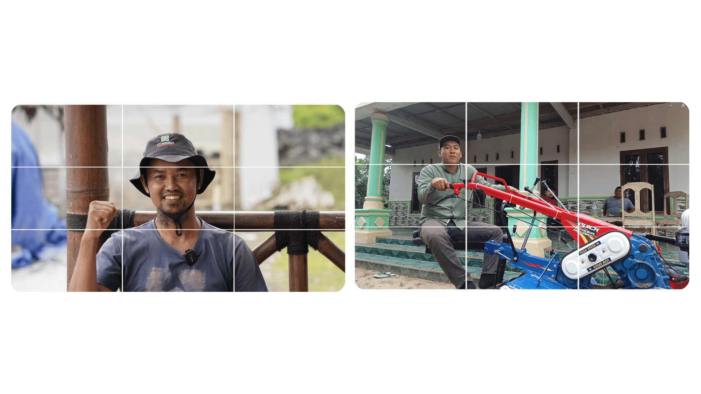
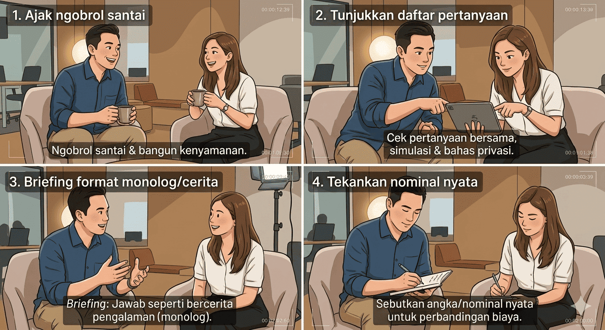

Production Standard
Panduan Visual Wawancara
Standar kualitas pengambilan video untuk Tim Cabang Quick.

Visual: Hadap Cahaya (Benar)
1. Pencahayaan (Lighting)
- Wajah Terang: Pastikan wajah narasumber terpapar cahaya dengan merata.
- Hindari Backlight: Jangan meletakkan matahari di belakang narasumber.
- Outdoor Tip: Cari lokasi teduh namun cerah agar tidak ada bayangan kasar.

Visual: Posisi Mic Optimal
2. Audio (Kunci Utama)
- Mic Eksternal: Wajib gunakan Mic Wireless/Clip-on di kerah baju.
- HP Cadangan: Gunakan HP lain sebagai perekam dekat mulut jika tidak ada mic.
- Noise Control: Cari lokasi tenang dari suara mesin atau angin kencang.

Visual: Rule of Thirds
3. Framing & Komposisi
- Medium Close-Up: Ambil gambar dari batas dada hingga sedikit di atas kepala.
- Eye Level: Kamera sejajar dengan mata (jangan terlalu tinggi/rendah).
- Produk Presence: Sertakan unit traktor di latar belakang/samping.

Visual: Alur Testimoni
4. Teknik Script & Briefing
- Ice Breaking: Ngobrol santai dulu agar konsumen tidak kaku.
- Briefing Monolog: Arahkan mereka untuk bercerita/testimoni alami.
- Data Riil: Minta penyebutan hasil panen atau biaya riil untuk kredibilitas.